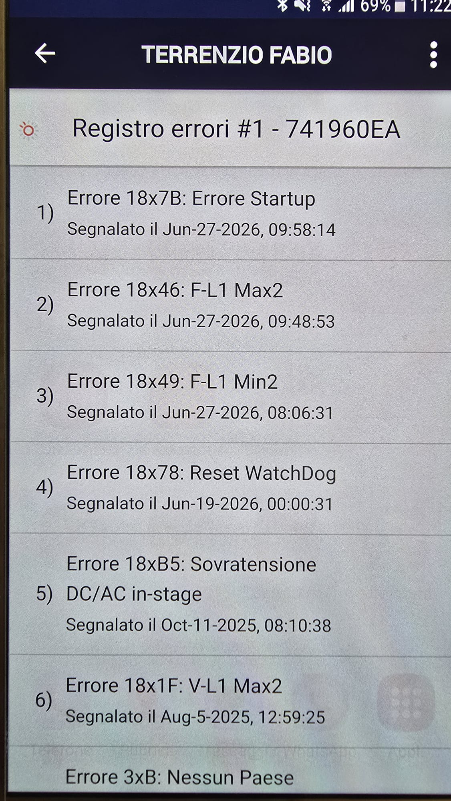
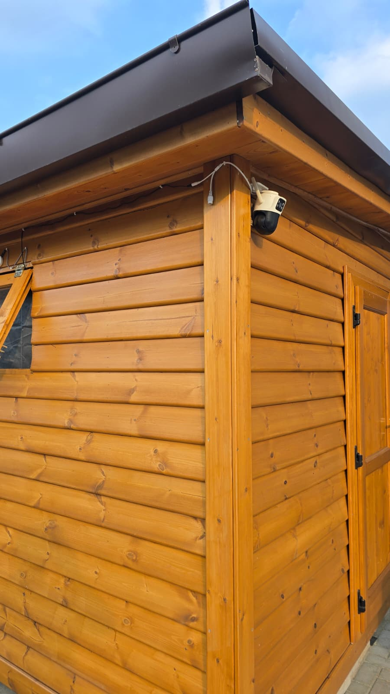
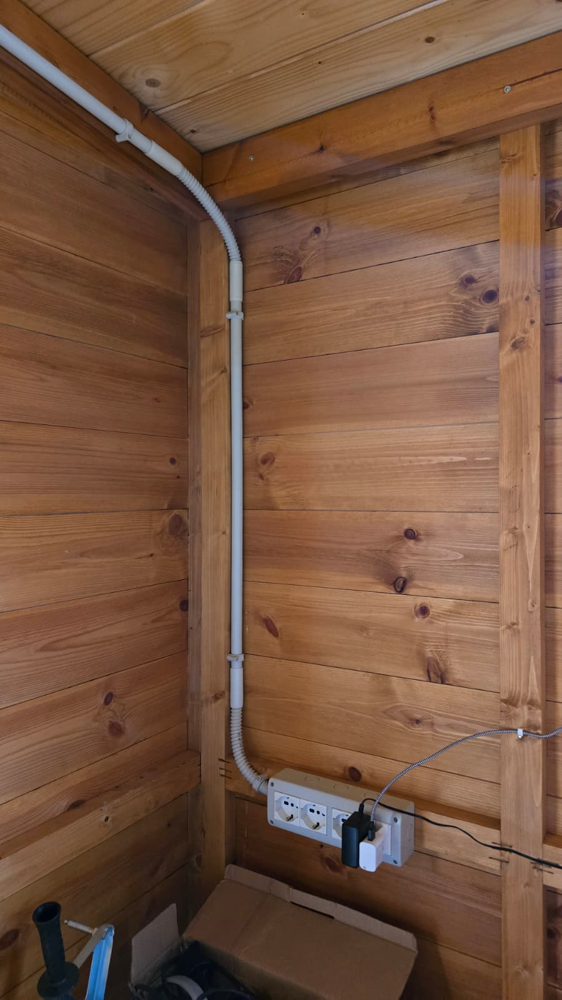
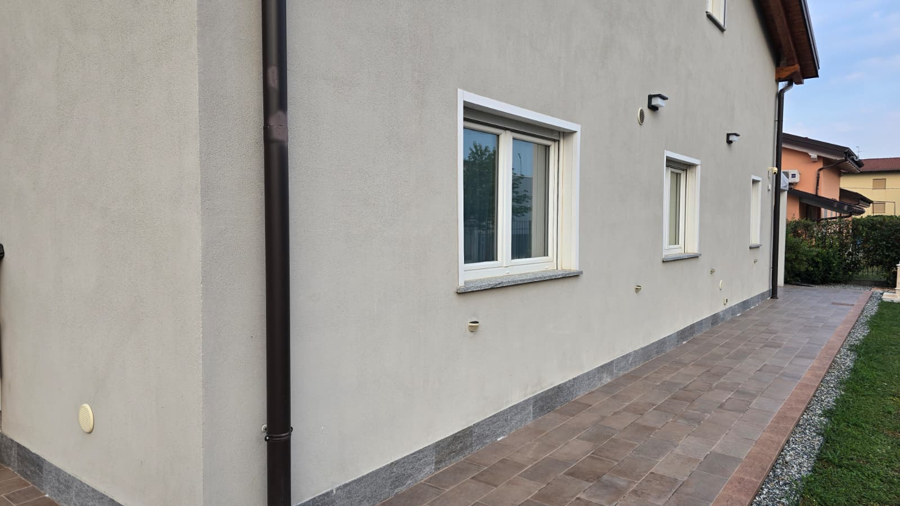
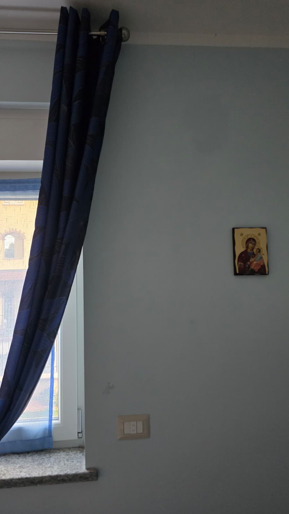
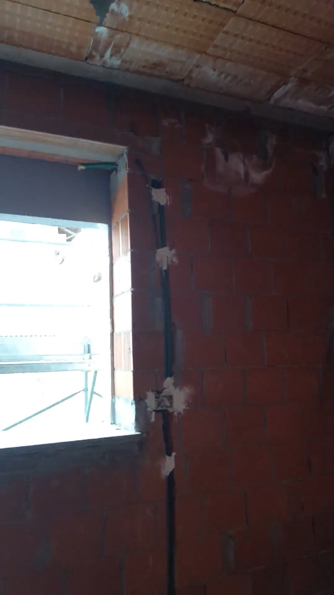
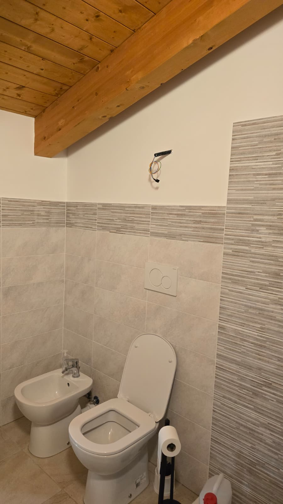

Relazione per opere elettriche e ottimizzazione del sistema energetico
Ciao Eduardo, di seguito gli interventi da fare. Al Punto 1 c'è di nuovo il problema del "Fuori rete", forse avevamo l'impressione fosse stato risolto ma non è così o forse è semplicemente ritornato. L'intelligenza artificiale propone una soluzione ma "prendila con le pinze", potrebbe anche essere sbagliata, sei tu l'esperto. I punti 3 e 4 richiedono interventi di muratura. Stuccatura, rasatura e tinteggiatura successive le faccio io. Fammi sapere cosa puoi fare, dubbi o chiarimenti.
Sabato 27 giugno 2026 ho fatto prove in modalità "off-grid" (funzionamento ad isola), e il fotovoltaico ha smesso subito di produrre non appena staccata la rete. Quando il Tesla Gateway 2 seziona la linea ENEL, il blocco elettrico dei pannelli FV da parte dell'inverter è immediato (spia rossa fissa). Questo blocco avviene all'istante, anche se l'app Tesla ci mette qualche secondo ad aggiornare la grafica sul telefono; la casa resta alimentata solo dalla batteria Powerwall 2.
La prima prova è partita alle ore 08:06:31 con batteria al 30% ed è stata mantenuta in isola per più di mezz'ora, ma l'inverter è rimasto piantato in protezione senza mai riavviare i pannelli. Più tardi, alle ore 09:48:53 (con batteria al 50%), ho fatto un secondo tentativo che ha dato lo stesso identico blocco immediato. Infine, ho eseguito una terza prova in serata con la batteria Powerwall 2 carica oltre l'85%: anche in questa circostanza si è verificato un blocco istantaneo della produzione, sebbene con un comportamento della frequenza differente rispetto alle prove diurne.
In rete (on-grid) ENEL inchioda la frequenza a 50,00 Hz e tutto funziona: la produzione FV nell'app Tesla è coerente con il monitoraggio SolarEdge. Il metering del fotovoltaico è quindi corretto e non è la causa del problema.
In isola (off-grid) il Gateway Tesla forma la micro-rete (sorgente grid-forming) e la frequenza non resta a 50 Hz. Nelle prime due prove diurne, a FV spento, l'isola si assesta a ~49,50 Hz (mezzo hertz sotto nominale). La differenza tra i due test diurni riguarda il primo istante dello stacco: alle 08:06 (poco sole, nessun surplus) va dritta a 49,5 e l'inverter scatta su soglia minima (Min2); alle 09:48 (più sole, surplus FV reale) c'è prima un picco verso l'alto a ~53 Hz e l'inverter scatta su soglia massima (Max2), poi l'isola ricade a 49,5. Nella terza prova serale, avendo la batteria oltre l'85%, la micro-rete si è stabilizzata direttamente a 52,00 Hz, determinando comunque il blocco immediato dei pannelli. I valori di frequenza sono stati tutti misurati direttamente al multimetro; per le prime due prove diurne gli scatti e le anomalie sono confermati anche dal log dell'inverter, mentre la prova serale è stata riscontrata esclusivamente tramite multimetro.
Tre fenomeni distinti:
(1) Il picco a ~53 Hz (solo prova 2, solo in presenza di surplus) è un'azione del Gateway: è curtailment reale. Nell'istante dello stacco il surplus FV che prima andava in rete non ha più sbocco e il Gateway sbatte la frequenza in alto per frenare i pannelli — ma in modo eccessivo (53 Hz) per un surplus che a batteria 50% (≈5 kW di margine) sarebbe assorbibile a 50 Hz. Che il picco compaia solo quando c'è sole/surplus conferma che è curtailment e non anti-islanding.
(2) L'assestamento a ~49,50 Hz (entrambe le prove diurne) è il comportamento del gateway che si "pianta" al di sotto dei 50Hz, proprio sul bordo inferiore della finestra dell'inverter. Questo spiega il Min2 nella prova 1 e spiega perché l'inverter non si riaggancia mai all'isola. Nota bene: da logica standard Tesla, lo spostamento di frequenza (Frequency Shift) utilizzato per tagliare o modulare i pannelli deve avvenire verso l'alto a 52,00 Hz, ed esclusivamente quando la batteria è quasi carica (SOC superiore all'85%). Questo avviene nel test serale ed è un comportamento corretto da parte del Gateway. Il fatto, invece, che nelle prime due prove il Gateway si attesti fisicamente a 49,50 Hz stabili con batteria scarica (30-50%) nelle ore diurne è un comportamento fuori specifica che inibisce il riavvio del fotovoltaico.
(3) Il comportamento sequenziale al rientro in rete (transizione On-Grid): Quando viene terminata la prova e si ripristina la rete, il Gateway collega immediatamente ENEL e l'inverter SolarEdge, ma stacca temporaneamente la Powerwall, riattivandola solo in un secondo momento. Questo fenomeno conferma empiricamente la diagnosi: essendosi incastrato a 49,50 Hz in modalità isola, il Gateway non può rimettere in parallelo l'accumulo con i 50,00 Hz di ENEL senza rischiare un distruttivo sfasamento elettrico. Deve perciò isolare la batteria, far digerire all'inverter i 50,00 Hz puliti della rete per consentirgli lo sblocco, e solo dopo risincronizzare l'accumulo in modalità grid-following.
| Orario / Prova | Riscontro Hardware / Errore | Stato Sistema | Comportamento Rilevato |
|---|---|---|---|
| 08:06:31 | Log Inverter + Multimetro Errore 18x49 (F-L1 Min2) |
Batteria al 30% Prova diurna lunga (>30 min) |
Sotto-frequenza d'isola permanente. Frequenza misurata al multimetro e registrata a log: 49,50 Hz. La logica nativa del Gateway prevede l'innalzamento della frequenza a 52,00 Hz solo con batteria carica >85%. In questo scenario (batteria scarica e nessun surplus), il Gateway genera invece un'isola fissa sotto-frequenza a 49,50 Hz. L'inverter scatta sulla soglia minima e resta bloccato in protezione per tutta la prova senza riuscire a riagganciarsi. |
| 09:48:53 | Log Inverter + Multimetro Errore 18x46 (F-L1 Max2) |
Batteria al 50% Prova diurna breve |
Picco di sovra-frequenza allo stacco. Nel primo istante lo stacco genera un picco a ~53 Hz confermato sia dal multimetro che dal codice di errore Max2 registrato dall'inverter SolarEdge; a FV spento, l'isola ricade a ~49,5 Hz come nel primo test. Il picco a 53 Hz è un curtailment eccessivo operato dal Gateway in presenza di surplus FV reale, nonostante il margine di assorbimento della batteria. |
| 09:58:14 | Log Inverter Errore 18x7B (Err. Startup) |
In Isola (diurna) | Mancato Riaggancio (Startup Fallito). Dopo i 10 minuti di osservazione previsti dalla norma, l'inverter tenta il riavvio automatico ma fallisce la sincronizzazione poiché i parametri della micro-rete generati dal Gateway sono fuori tolleranza (bloccati a 49,50 Hz rispetto ai 50 Hz nominali richiesti dalla CEI 0-21). |
| In serata | Solo Multimetro Nessun errore a log inverter |
Batteria >85% Terza prova |
Blocco immediato a 52,00 Hz. Con batteria quasi carica, il Gateway configura la micro-rete direttamente a 52,00 Hz (valore misurato accuratamente via multimetro). L'inverter SolarEdge va istantaneamente in blocco di protezione (spia rossa fissa) impedendo il funzionamento, ma a differenza dei test diurni questo comportamento è corretto. |
La causa del blocco perenne è l'impostazione di un profilo di rete (Grid Code) errato o non aggiornato nel firmware del Tesla Gateway 2. Invece di generare una micro-rete standard a 50,00 Hz, il Gateway applica un setpoint fisso e intenzionale a 49,50 Hz; questa frequenza, pur essendo stabile, si trova al di sotto delle rigide soglie di riconnessione previste dalla normativa italiana (CEI 0-21) per gli inverter fotovoltaici, costringendo il SolarEdge a rimanere perennemente in protezione (Min2) anche se la batteria è scarica (30-50%) e pronta a ricevere energia.
La soluzione richiede l'intervento dell'assistenza Tesla o dell'installatore tramite l'app Tesla Pros per configurare correttamente il profilo di isola (Island Mode Profile). È necessario forzare da remoto un aggiornamento firmware del Gateway 2 e reimpostare i parametri di Frequency Shift, allineandoli alla normativa CEI 0-21 coordinata con inverter AC; questo costringerà il Gateway a stabilizzare l'isola tassativamente a 50,00 Hz costanti, permettendo al SolarEdge di completare la procedura di riaggancio automatica in totale sicurezza.
[IMMAGINE: SCREENSHOT REGISTRO ERRORI INVERTER]

[VIDEO: PROVA TRANSIZIONE OFF-GRID]
Nota: il filmato si riferisce esclusivamente alla prima prova delle ore 08:06:31
Questo lavoro prevede il montaggio di barre LED per illuminare la zona lavabo esterna e la sistemazione del cavo interno ed esterno destinato alla telecamera di sicurezza.
[IMMAGINE: VISTA ESTERNA ED ANGOLO PER LE BARRE LED]

[IMMAGINE: SCATOLA INTERNA E CANALINA PVC DI DERIVAZIONE]

Qui l'obiettivo è predisporre un terzo punto luce sulla parete esterna della casa, precisamente vicino all'angolo della finestra della camera da letto. Serve solo il lavoro elettrico (fili, scatole e predisposizione), senza montare la lampada vera e propria.
[IMMAGINE: PARETE ESTERNA E ALLINEAMENTO CON I PUNTI LUCE ESISTENTI]

[IMMAGINE: PARETE INTERNA CAMERA DA LETTO - STATO ATTUALE]

[IMMAGINE: DETTAGLIO STRUTTURALE TRACCE E CONDUZIONI GREZZE]

Il lavoro consiste nel montare un sistema di aspirazione forzata nel bagnetto del piano di sopra, sfruttando i fili elettrici che escono già dalla parete.
[IMMAGINE: PREDISPOSIZIONE ELETTRICA E PARETE PER FORO ESTRATTORE]
